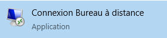
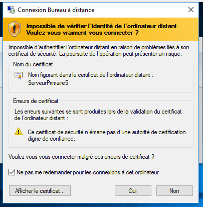

Liaison sécurisée avec le Bureau à Distance (RDP)¶
1. Activation du Bureau à Distance sur le serveur¶
Ouvrir le panneau de configuration¶
Depuis le tableau de bord du serveur Windows, accédez aux paramètres système :

Activer le Bureau à Distance¶
Activez l’option “Autoriser les connexions à distance à cet ordinateur” :


Cela permet au serveur d’accepter les connexions RDP depuis d’autres postes du réseau.
2. Autoriser RDP dans le pare-feu¶
Si une erreur de connexion apparaît, vérifiez que la règle du pare-feu est bien activée. Dans le pare-feu Windows :
- Recherchez la règle “Bureau à distance (RDP - TCP-In)”
- Activez-la si elle est désactivée.

Astuce
Vous pouvez aussi l’activer via PowerShell :
3. Connexion depuis un poste Windows¶
Ouvrir l’application “Bureau à distance”¶
Sur votre poste client, lancez le programme : Menu Démarrer → Rechercher “Bureau à distance” → Ouvrir

Se connecter au serveur¶
Saisissez l’adresse IP ou le nom du serveur puis cliquez sur Connexion. Acceptez le certificat de sécurité lorsqu’il est demandé :


4. Vérifier les autorisations d’accès utilisateur¶
Pour qu’un utilisateur puisse se connecter en RDP, il doit appartenir à l’un de ces groupes :
- Administrateurs
- Utilisateurs du Bureau à distance

Bonnes pratiques
- Évitez d’utiliser le compte Administrateur directement.
- Créez un utilisateur dédié pour les connexions RDP.
- Limitez les droits et activez l’audit des connexions.
5. Connexion réussie¶
Une fois connecté, vous avez un accès complet au bureau du serveur distant. Vous pouvez maintenant administrer le serveur comme si vous étiez en local, tout en gardant une liaison sécurisée via RDP.